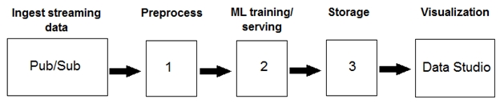

You are building an ML model to detect anomalies in real-time sensor data. You will use Pub/Sub to handle incoming requests. You want to store the results for analytics and visualization. How should you configure the pipeline?

A1 = Dataflow, 2 = Vertex AI, 3 = BigQuery
B1 = DataProc, 2 = AutoML, 3 = Cloud Bigtable
C1 = BigQuery, 2 = AutoML, 3 = Cloud Functions
D1 = BigQuery, 2 = Vertex AI, 3 = Cloud Storage
Correct Answer: 答案已隐藏 · 见下方讲解
中文翻译默认展开 · 点击可折叠
你正在构建一个 ML 模型，用于检测实时传感器数据中的异常。你将使用 Pub/Sub（Google 托管的消息队列/流式 ingestion 服务）来处理传入的请求。
（见上方图片）
你希望将结果存储起来，用于分析和可视化。你应该如何配置该流水线？
A. 1 = Dataflow，2 = Vertex AI，3 = BigQuery
B. 1 = Dataproc，2 = AutoML，3 = Cloud Bigtable
C. 1 = BigQuery，2 = AutoML，3 = Cloud Functions
D. 1 = BigQuery，2 = Vertex AI，3 = Cloud Storage
正确答案与详细讲解默认折叠 · 点击展开
【这道题在说什么】
想象你在一家工厂里，车间装了成百上千个传感器，每秒都在往外吐数据：温度、震动、转速、电流。你的任务是当某个部件开始不正常时，立刻发现它。数据是「流」过来的，不是一次性打包给你的，所以你不能等一整天再跑批处理，必须来一条处理一条。题目的图给出的是一条三段式流水线，位置 1、2、3 各是一个空，让你填服务名。三个空分别对应三件事：谁来接住源源不断的传感器消息（第一环）、谁来做异常判定的智能推理（第二环）、结果存到哪里才能被人拿去做分析和画图（第三环）。所以这不是一道考「模型算法」的题，而是一道考「组件选型」的架构题。
【先搞懂几个概念】
- 流式数据与批处理：批处理像每天凌晨把昨天所有订单导出成一个文件一次性算完；流式处理像水管里的水，一条一条不停地来，必须边流边算。传感器、点击流、支付流水都是流式场景。这道题的题眼就是「real-time（实时）」，它会把所有主打批处理的服务排除掉。
- Pub/Sub：Google 全托管的「消息队列」服务。可以把它想成一个无限长的传送带：生产者（这里是传感器）把消息放上带子，消费者（这里是你的处理程序）从带子上按自己的节奏取。它的作用是「解耦」——生产者不用管谁来处理、处理得快不快，消息先存住再说，天然扛得住流量尖峰。题目已经指定用它做接入，所以第 1 环不能是它。
- Dataflow：Google 全托管的、基于 Apache Beam 的数据处理服务，最大的特点是「批流一体」——同一套代码既可以跑批处理也可以跑流处理。它天生支持直接订阅 Pub/Sub，可以做窗口聚合（比如「过去 5 分钟的平均震动」）、实时特征计算、格式转换。它是托管服务，你不需要管服务器，只需要提交作业，算力会按需自动伸缩。在本题它填第 1 空，负责「接住流、算出实时特征」。
- Vertex AI：Google 统一的机器学习平台，把训练、调参、模型注册、在线预测端点都收在一起。本题用到的是它的「在线预测端点」能力：你事先把训练好的异常检测模型部署成一个端点，然后每次来一批实时特征就调一次，它立刻返回「正常 / 异常」。它是托管的，端点可根据流量自动扩缩容。
- BigQuery：Google 的全托管、无服务器数据仓库。「无服务器」意味着你不需要开机器，写 SQL 就能对 PB 级数据做分析，算力自动弹性伸缩。它最擅长的是大范围扫描与聚合查询，能直接对接 Looker Studio、Tableau 这类商业智能（BI）可视化工具。本题第 3 空要求「用于分析和可视化」，这正是数据仓库的主场。
- Bigtable：Google 的宽列型 NoSQL 数据库，为「海量数据 + 极低延迟 + 按行键点查」设计，常用于 IoT 时间序列、广告投放画像这类高并发读写场景。它很能扛吞吐，但它的查询能力很弱，不支持自由 SQL 聚合分析，不是给 BI 画图用的。
- Cloud Storage：对象存储，可以理解为云上的网盘或文件柜。它极其便宜、容量无限，但文件躺在里面本身不能被「查询」，要做分析还得先加载进数据仓库。
- Dataproc：托管版的 Hadoop/Spark 集群服务。它虽然也能处理流（通过 Spark Streaming），但核心定位是批处理与大规模数据加工，而且你要自己规划集群规模，不是「无服务器」的体验。
- AutoML：Google 的自动化建模能力（现在统一收进 Vertex AI，包括 AutoML Tables、AutoML Vision、AutoML Natural Language 等）。它的卖点是你不需要写训练代码，只要准备好数据，它就自动选模型、调超参数。它解决的是「怎么建模型」，不是「怎么接流、怎么存结果」，所以在流水线的位置上放错了地方。
【题目给的约束条件（解题钥匙）】
- 「detect anomalies in real-time sensor data（实时传感器数据中检测异常）」→ 意味着整条链路必须支持低延迟的流式处理。凡是主打批处理的服务都不能放在第 1 空。因此排除了把 BigQuery 放第 1 空的 C、D 两项，也排除了 Dataproc（B 项）。
- 「You will use Pub/Sub to handle incoming requests」→ 说明接入层已经指定给 Pub/Sub 了，第 1 空是紧跟在 Pub/Sub 之后的「处理/特征计算」环节，必须是能订阅 Pub/Sub 的流处理引擎。这一条把 Dataflow 推到最合适的位置。
- 「You want to store the results for analytics and visualization（结果要存储起来供分析和可视化）」→ 存储层必须是一个能直接跑分析型 SQL 并被 BI 工具连接的系统。因此排除了 Cloud Bigtable（B 项，不能做分析型查询）和 Cloud Storage（D 项，对象存储不能直接分析与可视化）。
- 「anomaly detection model（异常检测模型）」需要一个推理环节 → 第 2 空必须是能托管模型、提供在线预测的服务。Vertex AI 符合；AutoML 偏向「自动训练」，不承担「线上接收请求并返回预测」的角色；Cloud Functions（C 项）只是轻量函数，不适合作为模型推理与存储的载体。
- 图里给出的是三段式流水线的示意（第 1、2、3 段分别对应接入处理、模型推理、结果落地），并不需要去辨认图中的细枝末节，抓住「三段」这个结构即可。
【正确答案为什么是 A】
A 的三段分别是 Dataflow → Vertex AI → BigQuery，逐一对应题目需求，而且工作机理都成立：
第一环 Dataflow 订阅 Pub/Sub 主题，把源源不断的传感器消息读进来。在这里它可以做滑动窗口统计（例如最近 1 分钟的温度均值与标准差）、做字段清洗与规范化、把原始读数拼成模型需要的特征向量。因为它批流一体，同一套逻辑在离线训练时和线上推理时都能用，天然避免「训练时特征算法」和「线上特征算法」两套代码不一致导致的问题。
第二环 Vertex AI 的在线预测端点接收每条特征向量，用事先训练好的异常检测模型打分，返回是否异常以及异常分数。端点是托管的，流量涨了自动扩容，不需要你维护服务器。
第三环 BigQuery 承接结果表：每条记录包含时间戳、设备 ID、异常分数、判定结论。因为数据已经在 BigQuery 里，分析师可以直接写 SQL 统计「各设备异常次数排行」「每天的异常率趋势」，或者直接把这张表接进 BI 仪表盘做可视化，完全不需要再做一次数据搬运。
三个组件都是全托管服务，组合起来既满足「实时」，又满足「分析 + 可视化」，链路最短、职责最清晰。
【其他选项为什么不行】
- 选项 B（1 = Dataproc，2 = AutoML，3 = Cloud Bigtable）：这三个都是真实存在的 GCP 服务，只是都用错了地方。Dataproc 是托管 Spark/Hadoop 服务，强项是批处理大规模数据加工（比如每天离线跑一遍特征工程），用它来承接实时传感器流要么需要额外折腾 Spark Streaming 的微批次、要么延迟根本达不到「实时」要求，而且它需要你规划并承担集群的开销，不是这道题想要的低延迟路径。AutoML 是「自动帮你训练模型」的能力，它不负责在线接收预测请求，无法充当第 2 环的推理端点。Cloud Bigtable 是低延迟宽表数据库，最适合「按行键高频点查」（比如按设备 ID 查最新状态），它不支持自由的分析型聚合 SQL，也没有现成的 BI 对接能力，所以第 3 空要求「分析和可视化」时它就不合格了。
- 选项 C（1 = BigQuery，2 = AutoML，3 = Cloud Functions）：BigQuery 是数据仓库，它确实支持流式插入（Streaming API），但它本质上是一个分析引擎，不是流处理引擎——它不能订阅 Pub/Sub 做窗口聚合与实时特征计算，把原始消息先灌进仓库再想办法处理，链条变长、延迟变大，不满足「实时异常检测」的第一环要求。AutoML 不提供线上预测端点，不能当推理层。Cloud Functions 是轻量、无状态、有执行时长上限的函数计算服务，适合「某个文件上传了帮我生成缩略图」这种小任务，它既不适合承载模型推理，更不是「结果存储」的载体——函数执行完就结束了，不会替你保存历史结果供分析。
- 选项 D（1 = BigQuery，2 = Vertex AI，3 = Cloud Storage）：第 2 空 Vertex AI 是对的，第 1、3 空都错了。用 BigQuery 做第一环的问题与 C 相同：数据仓库不是流处理引擎。第 3 空用 Cloud Storage 只解决了「存」，没解决「分析和可视化」——文件静静地躺在对象存储里，你不能对着它写 SQL、也不能直接把桶接到 BI 工具上，你还得再写一个加载作业把数据搬进 BigQuery，等于多做一步、链路更长，也就偏离了题目「store the results for analytics and visualization」的意图。
【这个考点还会怎么考】
- 变体一：把「实时」改成「每天凌晨跑一次批处理」。这时第 1 空会从 Dataflow 变成 Dataproc 或直接用 BigQuery 的批处理导入，因为不再需要低延迟；答案会向「批处理 + 数仓」组合倾斜。做题方法是先抓「实时 / 批量」这个词。
- 变体二：把「用于分析和可视化」改成「用于毫秒级点查某个设备的最新状态」。这时第 3 空的服务会从 BigQuery 换成 Bigtable，因为需求从「分析型聚合」变成了「低延迟按行键点查」。这说明存储选型的关键是问「是分析型查询还是点查」。
- 变体三：把题目改成「在流水线中做图像预处理和特征提取」并问哪个组件。答案会指向 Dataflow，因为它可以调用外部 AI API 做转换，同时保持批流一体。
- 变体四：把题目改成「需要消息的可靠投递与解耦，允许消费者慢一点处理」。答案会强调 Pub/Sub 的角色——先接住、不丢消息，再慢慢消费，这就是消息队列存在的意义。
【一句话记住】